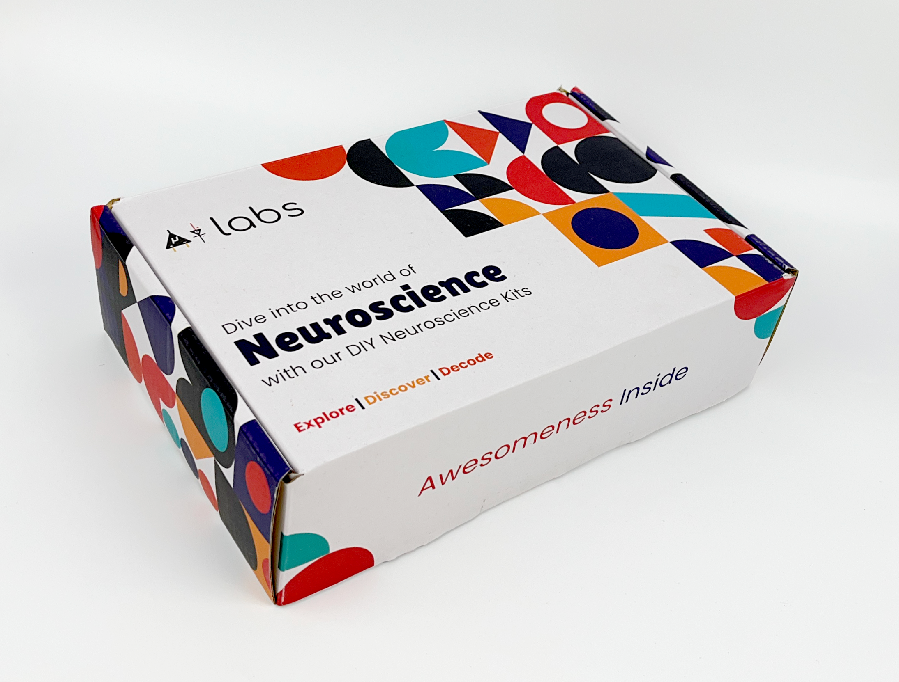

Kit Neurosains DIY Pro#
Ini adalah Kit Neurosains DIY lanjutan dengan Muscle BioAmp Shield - Shield EMG untuk Arduino UNO! Shield ini menawarkan berbagai opsi plug-and-play, dan akuisisi data tambahan sementara BioAmp EXG Pill meningkatkan keserbagunaan dengan memungkinkan pengukuran berbagai sinyal biopotensial, termasuk EEG (otak), EOG (mata), EMG (otot), dan ECG (jantung). Mulai perjalanan penemuan Anda, saat Anda membangun proyek menarik, mengembangkan aplikasi HCI/BCI, dan mendapatkan wawasan berharga.

DIY Neuroscience Kit Pro#
Isi Kit#
Isi Kit |
Qty |
|---|---|
BioAmp EXG Pill |
1 |
Pita BioAmp |
3 |
Kabel BioAmp |
1 |
Kabel Jumper (set of 3) |
1 |
Kit Persiapan Kulit |
1 |
Gel Elektroda |
1 |
Elektroda Gel |
24+100 |
Elektroda gel repositionable (3 pc) |
1 |
Arduino UNO R3/Arduino UNO R4 Minima |
1 |
Servo Claw |
1 |
Kit Muscle BioAmp Shield (Dengan 1 Kabel BioAmp, 6 Kabel STEMMA, kabel snap 9V, Kabel AUX BioAmp, Pita Muscle BioAmp, 24 elektroda gel, & Muscle BioAmp Shield) |
1 |
Klik tautan di bawah untuk melihat pembukaan kotak kit:
Persyaratan Perangkat Lunak#
Untuk menggunakan Kit Neurosains DIY Pro Anda, Anda akan memerlukan perangkat lunak yang disebutkan di bawah ini. Instruksi tentang cara menggunakannya disediakan nanti di panduan.
Arduino IDE v1.8.19 (legacy IDE) (Unduh ini untuk mengunggah firmware Chords arduino ke papan pengembangan Anda)
Chords Web (Gunakan aplikasi web open-source ini untuk memvisualisasikan sinyal biopotensial Anda)
Visual Studio Code (atau editor kode pilihan Anda lainnya)
Python (Untuk menjalankan skrip Chords-Python)
Chords Python (Gunakan skrip python open-source ini yang dirancang untuk merekam dan memvisualisasikan sinyal biopotensial)
Note
Firmware Chords Arduino identik untuk Chords Web dan Chords Python, jadi Anda hanya perlu mengunggah kode sekali, dan Anda siap.
Anda dapat memilih Chords Web atau Chords Python untuk merekam dan memvisualisasikan sinyal biopotensial Anda berdasarkan kebutuhan Anda. Jika Anda penasaran, Anda dapat mencoba keduanya satu per satu.
Menggunakan Kit#
Kit Neurosains DIY Pro mencakup 2 sensor biopotensial:
BioAmp EXG Pill (Dirakit)
Muscle BioAmp Shield v0.3 (Dirakit)
Anda dapat menggunakan sensor ini secara terpisah atau menghubungkannya bersama untuk membuat sistem akuisisi EXG 2-channel di mana channel 1 dapat digunakan untuk merekam sinyal EMG dan channel 2 memungkinkan Anda merekam semua sinyal biopotensial dari tubuh Anda (EMG, ECG, EOG, EEG).
Langkah 1: Menggunakan BioAmp EXG Pill#
BioAmp EXG Pill adalah papan akuisisi sinyal biopotensial analog-front-end (AFE) kecil dan kuat yang dapat dipasangkan dengan unit mikrocontroller (MCU) atau komputer papan tunggal (SBC) apa pun dengan konverter analog-to-digital (ADC) seperti Arduino UNO & Nano, Adafruit QtPy, STM32 Blue Pill, BeagleBone Black, dan Raspberry Pi Pico, untuk menyebutkan beberapa. Ini juga bekerja dengan ADC khusus apa pun, seperti Texas Instruments ADS1115 dan ADS131M0x, di antara lainnya.

Note
Lihat dokumentasi lengkap di BioAmp EXG Pill yang mencakup cara menggunakan sensor, merekam berbagai sinyal biopotensial dari tubuh Anda (ECG, EMG, EOG, EEG) dan membuat proyek HCI/BCI yang berbeda menggunakan itu.
Langkah 2: Menggunakan Muscle BioAmp Shield#
Muscle BioAmp Shield adalah shield ElectroMyography (EMG) Arduino Uno all-in-one untuk belajar neurosains dengan mudah yang terinspirasi dari BackYard Brains (BYB) Muscle Spiker Shield dan menyediakan fitur serupa seperti output servo hobi, tombol pengguna, LED Bar, output Audio, dan input baterai. Ini sempurna untuk pemula karena mereka dapat dengan mudah menumpuknya di atas Arduino Uno untuk merekam, memvisualisasikan dan mendengarkan sinyal otot mereka untuk membuat proyek luar biasa di domain Human-Computer Interface (HCI).

Note
Lihat dokumentasi lengkap di Muscle BioAmp Shield yang mencakup cara menggunakan sensor, merekam/memvisualisasikan/mendengarkan sinyal otot dan membuat proyek HCI yang berbeda menggunakan itu.
Langkah 3: Menggunakan sensor bersama#
Kami percaya bahwa Anda telah melalui dokumentasi BioAmp EXG Pill & Muscle BioAmp Shield menggunakan tautan yang disediakan di langkah 1 dan 2 masing-masing.
Anda telah mencakup langkah-langkah dasar sampai sekarang termasuk koneksi dengan papan pengembangan, persiapan kulit, penempatan elektroda, dan merekam sinyal dari tubuh Anda.
Mari menjadi PRO dan buat sistem akuisisi EXG 2-channel.
a. Menghubungkan Muscle BioAmp Shield ke MCU/ADC#
Tumpuk Muscle BioAmp Shield di atas Arduino Uno Anda dengan benar.

b. Konfigurasi untuk ECG/EMG (opsional)#
BioAmp EXG Pill secara default dikonfigurasi untuk merekam EEG atau EOG tetapi jika Anda ingin merekam ECG atau EMG berkualitas baik, maka disarankan untuk mengonfigurasinya dengan membuat sambungan solder seperti yang ditunjukkan pada gambar.

Konfigurasi BioAmp EXG Pill untuk EMG/ECG#
Note
Bahkan tanpa membuat sambungan solder, BioAmp EXG Pill mampu merekam ECG atau EMG tetapi sinyal akan lebih akurat jika Anda mengonfigurasinya.
c. Menghubungkan sensor bersama#
Hubungkan BioAmp EXG Pill ke port A2 Muscle BioAmp Shield melalui kabel STEMMA 3-pin yang memiliki konektor JST PH 2.0mm di satu ujung dan 3 jumper betina di ujung lainnya.
Muscle BioAmp Shield |
BioAmp EXG Pill |
|---|---|
GND |
GND |
VCC |
5V |
A2 |
OUT |

d. Menghubungkan kabel elektroda#
Hubungkan satu kabel BioAmp ke BioAmp EXG Pill dan kabel BioAmp lainnya ke Muscle BioAmp Shield dengan memasukkan ujung kabel ke konektor JST PH masing-masing seperti yang ditunjukkan di bawah:

e. Persiapan Kulit#
Kami akan membuat sistem akuisisi EMG 2-channel dan untuk melakukannya, kami akan menggunakan kedua sensor untuk merekam sinyal EMG dari saraf ulnar kedua tangan, Jadi, siapkan kulit yang sesuai.
Oleskan Gel Persiapan Kulit Nuprep pada permukaan kulit di mana elektroda akan ditempatkan untuk menghilangkan sel kulit mati dan membersihkan kulit dari kotoran. Setelah menggosok permukaan kulit secara menyeluruh, bersihkan dengan tisu alkohol atau tisu basah.
Untuk informasi lebih lanjut, silakan lihat langkah-langkah detail Panduan Persiapan Kulit.
f. Penempatan Elektroda#
Kami memiliki 2 opsi untuk mengukur sinyal EMG, baik menggunakan elektroda gel atau menggunakan Pita Muscle BioAmp berbasis elektroda kering. Anda dapat mencoba keduanya satu per satu.
Menggunakan elektroda gel#
Snap kabel BioAmp yang terhubung ke BioAmp EXG Pill ke elektroda gel.
Kupas backing plastik dari elektroda.
Tempatkan kabel IN+ dan IN- pada lengan kiri dekat saraf ulnar & REF (referensi) di belakang tangan kiri Anda seperti yang ditunjukkan di bawah.

Sekarang snap kabel BioAmp yang terhubung ke Muscle BioAmp Shield ke elektroda gel.
Kupas backing plastik dari elektroda.
Tempatkan kabel IN+ dan IN- pada lengan kanan dekat saraf ulnar & REF (referensi) di belakang tangan kanan Anda seperti yang ditunjukkan di bawah.

Menggunakan Pita Muscle BioAmp#
Snap kabel BioAmp yang terhubung ke BioAmp EXG Pill pada Pita Muscle BioAmp sedemikian rupa sehingga IN+ dan IN- ditempatkan pada lengan kiri dekat saraf ulnar & REF (referensi) di sisi jauh pita.

Snap kabel BioAmp yang terhubung ke Muscle BioAmp Shield pada Pita Muscle BioAmp sedemikian rupa sehingga IN+ dan IN- ditempatkan pada lengan kanan dekat saraf ulnar & REF (referensi) di sisi jauh pita.

Sekarang letakkan setetes kecil gel elektroda antara kulit dan bagian logam kabel BioAmp untuk mendapatkan hasil terbaik.
Tip
Kunjungi dokumentasi lengkap tentang cara merakit dan menggunakan Pita BioAmp atau ikuti video youtube yang diberikan di bawah.
Tutorial tentang cara menggunakan pita:
Note
Dalam demonstrasi ini kami merekam sinyal EMG dari saraf ulnar, tetapi Anda dapat merekam EMG dari area lain juga (bisep, trisep, kaki, rahang dll) sesuai kebutuhan proyek Anda. Pastikan untuk menempatkan elektroda IN+, IN- pada otot target dan REF pada bagian tulang.
g. Mengunggah kode#
Hubungkan Arduino Uno ke laptop Anda menggunakan kabel USB (Tipe A ke Tipe B). Unduh repositori github yang diberikan di bawah:
Muscle BioAmp Arduino Firmware
Pergi ke folder 8_EMGScrolling, buka sketch arduino 8_EMGScrolling.ino di Arduino IDE.
Pergi ke tools dari menu bar, pilih opsi board lalu pilih Arduino UNO. Di menu yang sama,
pilih port COM di mana Arduino Uno Anda terhubung. Untuk mengetahui port COM yang benar,
putuskan sambungan papan Arduino Uno Anda dan buka kembali menu. Entri yang hilang harus
port COM yang benar. Sekarang unggah kode.
Important
Pastikan laptop Anda tidak terhubung ke charger dan duduk 5m jauh dari peralatan AC apa pun untuk akuisisi sinyal terbaik.
h. Menguji koneksi#
Pergi ke tools dari menu bar, klik pada serial monitor untuk membukanya atau klik ikon di sudut kanan atas. Coba tekuk kedua lengan Anda satu per satu. Nilai output harus 0 pada titik ini.
Tekan tombol SW1 pada Muscle BioAmp Shield. Sekarang Anda akan melihat LED hijau menyala pada bar LED. Ketika Anda menekuk lengan kanan, Anda akan mendapatkan nilai output 1 pada monitor serial dan LED merah akan menyala. Demikian pula, ketika Anda menekuk lengan kiri, Anda akan mendapatkan nilai output 2 dan LED kuning akan menyala.

i. Menjalankan skrip python#
Buka Visual Studio Code, klik pada File > Open folder untuk membuka folder 8_EMGScrolling.
Buka terminal, dan pastikan path dikonfigurasi ke lokasi file requirement.txt.
Untuk menginstal semua modul yang diperlukan untuk menjalankan skrip Python, tulis perintah yang diberikan di terminal:
pip install -r requirements.txt
Buka EMG_Scroll.py dan ubah COM Port di kode (baris 14) sesuai COM Port yang Anda pilih di Arduino IDE. Simpan file dengan mengklik CTRL + S.
# Arduino serial port interface
ser = serial.Serial('COM12', 115200, timeout=1)
Jalankan skrip Python EMG_Scroll.py dengan menulis perintah yang diberikan di terminal:
python EMG_Scroll.py
j. Menggulir menggunakan sinyal EMG#
Tekan tombol SW1 pada Muscle BioAmp Shield lagi.
Di terminal, Anda akan melihat prompt Move Now. Ketika Anda menekuk lengan kanan, Anda akan melihat UP di terminal. Demikian pula, ketika Anda menggerakkan lengan kiri, Anda akan melihat DOWN di terminal.

Sekarang, buka youtube shorts di laptop Anda dan mulai gulir menggunakan sinyal otot Anda.

Note
Apa yang terjadi di latar belakang? Setiap kali sinyal EMG terdeteksi, itu bertindak sebagai pemicu untuk meniru tombol UP atau DOWN pada keyboard.
k. Mengkalibrasi kode#
Perubahan di Arduino Sketch
Modifikasi nilai threshold pada baris 73 dan 74. Threshold 1 untuk sinyal EMG yang direkam dari Muscle BioAmp Shield, dan threshold 2 untuk sinyal EMG yang direkam dari BioAmp EXG Pill.
Uncomment baris 71 di kode Arduino dan navigasi ke Tools > Serial Plotter. Anda akan melihat dua plot yang menunjukkan sinyal EMG kedua lengan Anda. Tekuk lengan kanan Anda dan amati nilai puncak pada sumbu y. Jika nilai puncak sekitar 240, Anda dapat mengatur threshold 1 di mana saja antara 150 hingga 200. Semakin rendah nilai threshold, semakin mudah memicu output sebagai UP atau DOWN, dan sebaliknya. Ulangi proses untuk menentukan nilai threshold 2 untuk lengan kiri Anda.
Setelah mengatur threshold, comment out baris 71.
Perubahan di skrip Python
Sesuaikan nilai latency pada baris 51. Nilai latency yang lebih tinggi akan membuat output kurang responsif, memerlukan Anda untuk menekuk dan menahan lebih lama untuk menggulir layar. Nilai latency yang lebih rendah akan membuat output lebih responsif, memungkinkan Anda menggulir layar dengan lebih mudah.
l. Kesimpulan#
Ini hanyalah demonstrasi untuk menunjukkan kepada Anda bagaimana kedua sensor (BioAmp EXG Pill & Muscle BioAmp Shield) dapat digunakan bersama untuk membuat sistem akuisisi EXG 2-channel. Dalam proyek ini, kami menggunakan BioAmp EXG Pill untuk merekam sinyal EMG, tetapi itu juga dapat digunakan untuk merekam sinyal biopotensial lainnya seperti ECG, EOG, atau EEG.
Beberapa ide proyek#
Upside Down Labs on Instructables:
1. Proyek yang dibuat menggunakan BioAmp EXG Pill#
1. Proyek yang dibuat menggunakan Muscle BioAmp Shield#
1. Proyek yang dibuat menggunakan sensor bersama#
Ini adalah beberapa ide proyek tetapi kemungkinannya tak terbatas. Jadi buat proyek Human Computer Interface (HCI) dan
Brain Computer Interface (BCI) Anda sendiri dan bagikan dengan kami di contact@upsidedownlabs.tech.